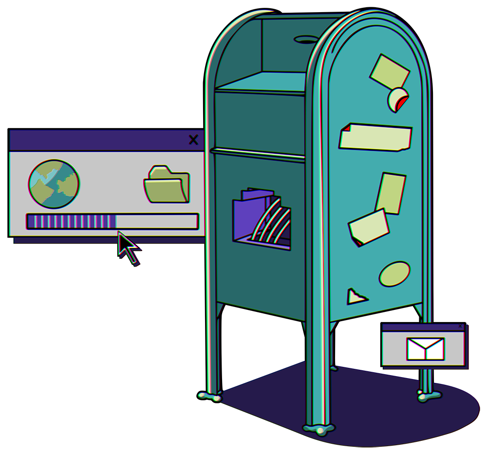

Subscribe to the podcast to receive new episodes as soon as we release them

1995 was the year that ISPs became the dominant gateway to the information superhighway. But how’d we go from ARPANET all the way to that? It turns out, none of it would have happened without a team of intrepid engineers at the University of Michigan.
Marc Weber tells us how a tension between academics and the military set the next evolution of the ARPANET. Douglas Van Houweling discusses the work his MERIT team did at the University of Michigan to build the national backbone of the NSFNET. Elise Gerich, MERIT’s systems manager, talks about how they made the leap from a T1 connection to a T3 to handle traffic from their growing network. And Janet Abbate emphasizes how all this set the stage for the commercialized internet that birthed the dot-com boom in 1995.
00:00 - Saron Yitbarek
In the spring of 1995, disruption was in the air. A quiet and invisible disruption that few would have noticed. A program called the NSFNET was shutting down.
00:19 - Saron Yitbarek
It didn't sound like much, did it? But as those switches were thrown and a bank of servers grew cold, a part of America was remade. You've maybe heard of the ARPANET, sort of the godfather of the internet, right? An early set of connections between a few military sites and universities. And I know you're familiar with today's internet, but there's a missing link between those two points, another network that thrived for a while in the 80s and 90s. This missing link connects the early days of publicly funded innovation and the later days of commercialized networks. It was called the NSFNET, the National Science Foundation Network, and it served as the internet's backbone for years. The little known story of its origin, and eventual demise in 1995, reveals a lot about how we got the online life we have today. It's the story of how the internet was privatized.
01:25 - Saron Yitbarek
I'm Saron Yitbarek, and this is Command Line Heroes, an original podcast from Red Hat. All season we're exploring one fateful year, 1995, to understand how today's tech reality was formed in that single moment. We're learning how one year became a catalyst for our whole future. And no moment in 1995 tells you more about that massive change than April 30th, when the Internet's backbone, the NSFNET, was switched off.
02:03 - Saron Yitbarek
The story of that fateful moment begins, though, back in the early 1980s. The United States was falling behind other countries in the field of large-scale computing, and the National Science Foundation, the NSF, decided to remedy that by creating supercomputing centers all around the states. Only problem was scientists needed access to those supercomputers. The logical thing to do was simply ring up the Defense Department and ask them to upgrade the network that already existed, the ARPANET. And that's exactly what the NSF did. They made a deal, paid the Defense Department $2 million for their trouble and waited. And what the NSF might not have considered was that the Defense Department wasn't so excited about funneling more traffic to the ARPANET. Here's Marc Weber, the curatorial director of the Internet History Program at the Computer History Museum.
03:02 - Marc Weber
The chance of people getting into something that's relatively open and not properly secured was going up.
01:38 - Saron Yitbarek
Professor W. Joseph Campbell is the author of 1995: The Year the Future Began.
01:45 - W. Joseph Campbell
It was a moment when the internet goes from obscurity to near ubiquity. There was a critical mass of users, there was a critical mass of content and there was a relatively easy way to get there. And that way to get there was the Netscape browser. And it really just took the web from, and the internet from, obscurity to prominence during that 12-month period.
03:10 - Saron Yitbarek
Try and look at this from the perspective of the Defense Communication Agency. Sure, it's nice that all these academics get to share information across the ARPANET, but that made state secrets vulnerable in the process. They grew anxious about the security of the network. Back then in 1983, there was a sci-fi movie called War Games. A teenage Matthew Broderick finds a back door into the U.S. Military's computer system, and thinking he's playing a video game, he almost starts World War III. Sure, that sounds far-fetched, but that movie reflected real concerns. The military in the 1980s was growing frustrated that the ARPANET was open to outsiders.
03:59 - Marc Weber
Researchers tended to want openness and to share material without worrying too much about copyright or permission. And the military obviously wants security and traceability. So there was that tension from the start. There was a point they even thought about just getting rid of the ARPANET. They might have gone off in completely their own direction.
04:23 - Saron Yitbarek
Eventually the scientists over at NSF got the message.
04:29 - Douglas Van Houweling
The Defense Department was clearly not enthusiastic about this.
04:33 - Saron Yitbarek
That's Douglas Van Houweling, a professor at the University of Michigan and a pioneer from the early days of the internet. He told us the Defense Department never did get around to implementing those connections that the NSF needed.
04:47 - Douglas Van Houweling
As a result, the National Science Foundation realized it had to take a different course.
04:54 - Saron Yitbarek
In fact, they planned to build a network all their own. In 1985, the NSFNET was born. Independent of the military, the National Science Foundation could provide academics with email, with file transfer protocols so they can upload and download files, and even remote access to time-sharing systems. So they were offering a lot of what the ARPANET had offered. But no, that's not the end of the story. The NSFNET had its heart in the right place, and its protocols in the right place too, but it was built on a deck microcomputer that could manage only 56 kilobits per second, otherwise known as dial-up speed. Downloading a movie at that speed would take about 213 hours.
05:45 - Douglas Van Houweling
The instant that the scientists needed to start transmitting substantial files from their universities to the supercomputing centers, that system rapidly became overloaded. Then, as more and more people on the various campuses started to use the NSFNET, the first generation for purposes other than transmitting files, that overload became even more serious.
06:16 - Saron Yitbarek
They were quickly bogged down, so the NSF put out a request for proposals. Who would like to upgrade their original 1980s network? Who had the vision to deliver phase two of the NSFNET? They received many submissions, but Van Houweling and a team called MERIT from the University of Michigan had spent 6 weeks stitching together an ambitious proposal that stood far above the rest. And this wasn't just the work of academics. Van Houweling and MERIT teamed up with the state of Michigan, with IBM, and with MCI. The MERIT team had supercharged their game by bringing huge corporate players to the table. Van Houweling heard in advance that their proposal had been selected. On the eve of the official announcement, he celebrated with his team, equal parts elated and daunted. It would be their task to save the nation's handful of fledgling regional networks, which were all tied to the overworked NSFNET. They had to make viable what pioneers had been struggling for decades to build. The work ahead seemed enormous.
07:29 - Douglas Van Houweling
We were sitting together, a group of us that worked on this, and one of us said, “You know this is going to change the world.”
07:43 - Saron Yitbarek
Changing the world in this case meant changing the relationship between the National Science Foundation and big tech, a relationship that until then had some rough spots. When word got out in the late 80s that the NSF wanted to build a faster network, AT&T sent over a team of executives to try and dissuade them. AT&T was claiming that, first of all, the NSFNET would never work. And second of all, if anybody should be building a new network, it should be them. Van Houweling and his team wanted to move beyond the dichotomy of private or public. They wanted private and public.
08:25 - Douglas Van Houweling
We understood that the National Science Foundation had only budgeted $15 million for 5 years to run the NSFNET phase 2. And looking at the traffic we knew would occur, we were confident that would be inadequate. So we reached out to the IBM Corporation and asked if they would partner with us. Now at that time, as hard as it is to believe today, there were no commercial internet routers. The consequence of that was that IBM, essentially from whole cloth, built the routers for NSFNET phase 2, and they contributed all that technology to the project.
09:08 - Saron Yitbarek
A huge leg up for the MERIT team, and they didn't stop there.
09:12 - Douglas Van Houweling
We also knew that we would need to have communication lines that were capable of operating at a much higher speed, in this case at one-and-a-half megabits per second. Just think about the change from 56 kilobits per second to one-and-a-half megabits per second. So we approached MCI, which at that time was a very small telephone company, and asked them if they would be partners with us in providing the communication lines we needed on a nationwide basis.
09:44 - Saron Yitbarek
Suddenly that little network from NSF had some pretty major players on its team, inspired by commercial interests of their own. Together they really might change the world, but several innovations would be necessary first. As Van Houweling mentioned, there weren't any commercial routers. IBM had to design them based on their own scientific workstations. A half dozen workstations were assembled and new software was written to handle all the routing. IBM had invented a new way to handle the flow of data, a multiprocessor router. And then what about those one-and-a-half megabit communication lines? T1 lines, as they were called, were used by telephone companies, but using them for the NSFNET's purposes caused big patterns to shut down. So MCI had to rebuild the hardware and software.
10:41 - Douglas Van Houweling
We never would have been successful in this effort if it hadn't been for the development of high-powered, scientific workstation personal computers, which IBM had developed, and without MCI's advanced microwave and fiber network that went across the nation. I think it's important to say that this was a partnership between corporations, higher education, and the Federal Government, and we never would have been successful without the contributions from the corporations.
11:17 - Saron Yitbarek
Adding to all those corporate resources was the internet protocol suite, TCP/IP, that had been developed by the researchers who produced the ARPANET. There had been skepticism at first that TCP/IP could scale, but those skeptics were proved wrong.
11:34 - Douglas Van Houweling
In fact, what NSFNET did was proved that this internet technology could scale from being a small system that supported computer science researchers, that was what the ARPANET was, to a system that could serve literally millions of people around the world.
11:58 - Saron Yitbarek
Upgrading the network in time for their July 1988 completion date was an enormously complicated task.
12:05 - Douglas Van Houweling
It was crazy. The amount of concentrated effort it took to build this from-scratch network in that short period of time, actually it was close to miraculous.
12:24 - Saron Yitbarek
The miracle became a reality in part by managing the relationship between MERIT's nationwide backbone and the 13 regional networks that relied on it, and that job belonged to MERIT's project systems manager, Elise Gerich.
12:40 - Elise Gerich
You have a backbone as the consolidating top tier, then you have the regional networks as the second tier, and then all the universities and academic areas within those regions connected to the regional networks was created. So that architecture was to be further implemented with the T1 backbone.
13:01 - Saron Yitbarek
Gerich remembers that, despite the big leap to a T1 backbone in 1988, growth on the network was leaping too. Across those 13 regional networks, there were at first 170 smaller networks reliant on the T1 backbone. But only a year later, traffic had grown by 500%. So even turning a 56-kilobit network into a 1.5-megabit network wasn't going to match that new demand. In fact, Gerich, Van Houweling and the whole MERIT team were starting to encounter a kind of paradox. The better you make the network, the more people use the network. They were building a positive feedback loop. In case you're keeping track, there was no worldwide web at this point. We're still in the late 1980s, and yet even the simple applications of FTP and email were enough to drive exponential traffic. Soon they needed to upgrade the network again.
14:05 - Saron Yitbarek
To solve the NSFNET's traffic woes once and for all, they would need to upgrade from a T1 to a T3 backbone. That meant leaping from 1.5 megabits to 45 megabits—easier said than done. MCI had figured out how to send data over T1, but T3 was entirely different. Meanwhile, there were no T3 routers. The architecture and adapter cards would also need to be different. This would be a full renovation.
14:37 - Elise Gerich
You'd solve one little issue that seemed small at the time and you thought, oh, then everything will be good. And the next thing you know, you found another little issue. So it was issue, after issue, after issue.
14:50 - Saron Yitbarek
Just to give you an idea how new all this tech was and how much they were flying by the seat of their pants, here's Gerich describing a demo they were trying to give of a router prototype.
15:01 - Elise Gerich
It overheated too much. And we borrowed an ice sculpture from a banquet room, put it behind the router with a fan so that it could blow cool air, so that the router wouldn't stop and that we could demonstrate the T3 capability.
15:19 - Saron Yitbarek
The T1 upgrade from the fall of 1987 to the summer of 1988 had taken 8 months to complete, but they began working almost immediately on the T3 upgrade, which was fully deployed in 1991. And all the while, as this new internet was being fashioned through a partnership of public and private resources, some pretty basic questions were being raised. Is the internet going to end up being a public good or private commodity? Is it a utility? Is access to the internet a right? What kind of network are we building?
15:56 - Elise Gerich
Those conversations happened everywhere. They happened within the offices of MERIT, they happened at the regional technical meetings, they happened at the global meetings, and there was a lot of concern on several fronts.
16:11 - Saron Yitbarek
Lots of people in the research and academic community were perfectly happy having the National Science Foundation support a backbone for the whole United States. Meanwhile, others saw a commercial opportunity, a chance to offer services to the general public.
16:27 - Elise Gerich
There were then emerging internet service providers, because other people did see the opportunity, the commercial opportunities to offer service more broadly than to a restricted research and academic community. And those were organizations like PSINet and UUNET, who felt that the National Science Foundation were going to compete with them.
16:54 - Saron Yitbarek
NSF had by then created another entity called Advanced Network and Services, which was designed to handle non-academic users. The new internet service providers didn't look kindly on that either. And meanwhile, some of MERIT's top minds were being wooed away to work for commercial enterprises. But the most important thing to remember is that the more successful NSFNET and MERIT were, the more they were in danger of outgrowing their own capacity. When they unveiled the T3 backbone, they produced a watershed moment. In effect, they created the kind of internet they were never going to be able to handle. They had scaled the U.S. internet into something that had the true ability to go global. International traffic could transit their network and grow, which means the inevitable finally happened.
17:48 - Elise Gerich
Certainly people didn't want it to go away and they were very unhappy when it was going to be shut down.
17:55 - Saron Yitbarek
Shut down. I know, things were trucking along there. We jumped from 56 kilobits to a T1, and then up to a full T3 backbone. But all good things...
18:12 - Janet Abbate
What happened first was that those regional networks, some of them decided to commercialize their operations.
18:19 - Saron Yitbarek
Janet Abbate is a professor in the Department of Science Technology and Society at Virginia Tech.
18:26 - Janet Abbate
They started out as these nonprofits that were simply running a regional network to connect universities in their region. And then some of them said, well, what if we create a sort of commercial version of ourselves and we'll sell the service back to the universities, but then we can also sell that service to commercial customers?
18:48 - Saron Yitbarek
New ideas about commercializing networks were popping up, even as the ARPANET was shut down in 1990. On the one hand, the Federal Government was debating whether to build a national network. But on the other hand, browsers like Mosaic were emerging, driving traffic and commercial interests for internet service providers, ISPs, which kept popping up to capitalize on the new marketplace.
19:13 - Janet Abbate
All of these are coming together in this chaotic way, where NSF is from one direction getting Congress saying, you need to build this network, and from another direction, you got the ISP saying, we want to provide commercial service. And then there's people who want to be on the web. And so, I think NSF in a sense just wanted to toss that football to someone else at a certain point and say, we don't want this to be our problem anymore. The first viable solution we see, we might just go with that.
19:43 - Saron Yitbarek
As they finally edged toward that pivotal moment of 1995, an escape plan began to form. The emerging internet had grown beyond the purview of the NSF. They had proven that TCP/IP could thrive without a central manager, and those ISPs were quickly outstripping the NSF's capacity. A hand-off to the private sector seemed the best way to ensure the network could continue to scale. That earlier vision of a noncommercial, publicly funded internet was coming to a close, but that didn't mean a handoff to the private sector would be smooth sailing. Elise Gerich remembers the chaotic months leading up to the 1995 shutdown.
20:30 - Elise Gerich
Oh my gosh, that was such an intense period of time. There was so much to do.
20:36 - Saron Yitbarek
The regional networks were less than pleased. Still, little by little, they were forced to select new providers.
20:43 - Elise Gerich
But it wasn't until February that basically MERIT sent the termination notice of the service to all of its 19 locations, and that's when people became desperate. They started sending us so many configuration changes. Some of the regionals, at the last month, said, "Well, we're not going to make it; our connection from our new service provider won't be here." And it's like, oh my gosh, what are we going to do now? We're shutting stuff down. A couple of regionals said, "Well, we just don't want to do it." And we said, "Sorry, this is going to happen."
21:28 - Saron Yitbarek
It was going to happen and it was going to change everything. Yes, there had been dial-up services, like America Online, which paid for their own infrastructure. Banks and airlines had their own networks too. But after April 30, 1995, vastly more businesses and entrepreneurs were going to be coming to the table.
21:54 - Saron Yitbarek
On the NSFNET's very last day, a dozen staff gathered at the University of Michigan to finally shut it down forever. One by one, they shut off the ENSS's, the exterior nodal switching subsystems. And that evening, the NSFNET breathed its final breath. For some, that day in 1995 came to be known as Internet Independence Day, the day the internet truly left the government's domain. It launched a new age of e-commerce and social media, a whole new landscape of online experience. But the internet's history is never quite that simple. As Janet Abbate notes, the innovations that the academic world brings to our network world did not stop that day.
22:53 - Janet Abbate
The National Science Foundation never stopped funding research in high-performance computing and networking. I think their current focus is on wireless networking, among other things, funding advanced cutting edge networks for universities and scientists. From their point of view, the NSFNET was an early episode in an ongoing research enterprise.
23:17 - Saron Yitbarek
That research enterprise lives on. What is sometimes missing today though, is the oversight—the policy that government can provide.
23:26 - Janet Abbate
Well, in a way I'm not sure what we have today is any more sustainable than the NSFNET was in 1995. We have conflicts we don't exactly know how to resolve. And we didn't cure the problem in 1995 by throwing it to the private sector. I think there was this hope that the private sector is kind of a universal solvent and everything will be fixed by it, and that didn't really happen. So I think we have to face up to the fact that there's always going to be conflicts on the internet, and simply hoping people will exercise self-restraint is not really a substitute for real policy mechanisms.
24:10 - Saron Yitbarek
In recent years, an open internet order reasserted government control and lobbyists for private companies pushed back. That balance between public and private is something we can lose sight of when we roam the internet today. Sometimes it feels like one big commercial, but that's just not the whole picture. Here's Douglas Van Houweling one last time to remind us of the internet's roots.
24:36 - Douglas Van Houweling
I think what a lot of people don't understand is that the internet today stemmed from the need of the research community, first in the United States, and then all over the world, to be able to do their science. The NSFNET was built to support researchers across the nation in working with one another, in accessing the supercomputers, in accessing data that they needed to do their research. So as hard as it may be to realize today, the motivation for NSFNET and the motivation for the first large-scale generation of the internet had nothing to do with making any money. It was absolutely about advancing knowledge and supporting the research community.
25:40 - Saron Yitbarek
However the internet evolves from here, it's most exciting advances won't just come from some new startup. Fundamental changes still tend to come from that place where private innovation meets the pure science and research that underpins our online lives. That was the marriage of public and private that had pushed the NSFNET to a point of such fantastic possibilities by 1995. For a brief moment in between the ARPANET and today's internet, the NSFNET shined a light on what's possible when government, academics, corporations, all the players, start playing on one team.
26:26 - Saron Yitbarek
The story of the young internet sometimes gets told as a journey from the public realm to the private realm, but that's not exactly how I see it. Our internet today is a private realm built on top of a public realm, an online experience that relies on decades of public and academic work. We should remember that when we're looking around for the next big thing, because it might just come from that sweet spot, that moment in 1995 when the NSFNET just couldn't stop growing.
26:59 - Saron Yitbarek
Next time it's the web's dominant language, HTML. We're exploring its origins, its standardization. And we're also asking whether English programming languages are ready to embrace a truly global perspective. Until then, I'm Saron Yitbarek, and this is Command Line Heroes, an original podcast from Red Hat. Keep on codin’.
More from the episode...
About the art
Episode two is all about the ways we share information. Prior to 1995 large amounts of data were shared among universities through traditional methods. Shipping was a very common way to get stacks of documents from one place to another and mailboxes served an integral role in the process. With the advent of the early internet these documents could be digitized to mere bites and sent electronically through an array of connected phone networks. Suddenly the phone jack in the wall could largely replace the trusty old mailbox. The key art we created for this episode aims to illustrate the (at the time) new relationship between the mailbox and the phone jack.
Kendall 'Boo Boo' Howse
Senior Designer, Red Hat
Further Reading
Each episode is based on a lot of research. Here are just a few of the resources we used to learn about the NSFnet:
How the Internet lost its soul by Janet Abbate
Elise Gerich’s Internet Hall of Fame 2019 Induction Speech by Elise Gerich
How the Net Was Won: Michigan Built the Budding Internet by Randy Milgrom
How the Internet was born: from the ARPANET to the Internet by Giovanni Navarria

The number of computers connected
to the internet went from 2,000 in 1985
to more than 12 million in 1995.
Featured in this episode
Get the newsletter
After each episode drops, we send commentary from the Command Line Heroes team, as well as links that help you take a closer look at the topics we cover. It’s as simple as that.
Presented by Red Hat
For 25 years, Red Hat has been bringing open source technologies to the enterprise. From the operating system to containers, we believe in building better technology together–and celebrating the unsung heroes who are remaking our world from the command line up.